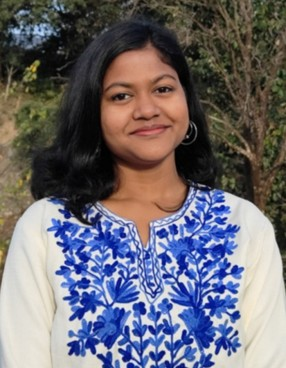

PhD in Biomedical Engineering
Sangeeta Behera
Research Scholar
Sangeeta Behera is a Ph.D. research scholar at the Centre for Biomedical Engineering (CBME), Indian Institute of Technology Delhi, where she joined on 02 January 2025. Her doctoral research focuses on the development of an injectable hydrogel–microsphere composite system for non-surgical periodontal tissue regeneration.
Email: bmz248698@iitd.ac.in
LinkedIn: View Profile
Research Interests
- Tissue engineering and regenerative medicine
- Design and development of regenerative biomaterials
- Localized and controlled drug delivery systems
Education
- M.Sc in Biotechnology, (2021–2023), Pondicherry University with distinction (CGPA: 8.83).
- B.Sc in Biotechnology, (2018–2021), Odisha University of Agriculture and Technology, Bhubaneswar, graduating with distinction (CGPA: 9.08).
Projects & Publications
- Ph. D. Thesis Title: “Injectable Hydrogels for Periodontal Tissue Regeneration”
- M.Sc. Project Title: “Characterization of Bacteriocin of Lactic Acid Bacteria Isolated from the Gut of Insectivorous Bat (Hipposideros speoris)”
- A Novel Bacteriocin from Insectivorous Bat (Hipposideros speoris) Intestine Mimicking Mammalian FAM216B: Probiotic, Antioxidant, and Antimicrobial Properties of Enterococcus hirae BNT6